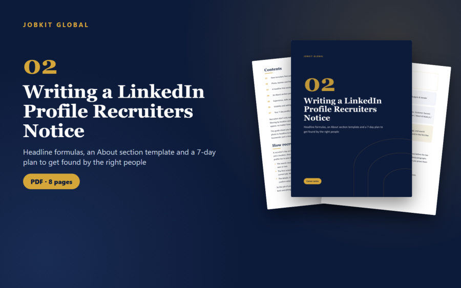

Career series
Writing a LinkedIn Profile Recruiters Notice
Headline formulas, an About section template and a 7-day plan to get found by the right people

Recruiters don't only wait for applications. Many of them search LinkedIn every day, typing keywords and filtering by location and job title. If your profile doesn't contain the words they type, you simply don't appear, no matter how good you are.
This guide shows you how recruiters actually read a profile, then walks you through each part, from photo to headline to experience, with formulas, examples and templates you can copy. No tricks, no buzzwords: just a clear, honest profile that makes it easy to say yes to a conversation.
Get the complete guide
Printable PDF with every section, the templates and the checklist. Instant download.
How recruiters find and read your profile
A recruiter's day on LinkedIn usually has two moments. First, a search: they type a job title, a few skills and a location, then scan a list of results. Second, a quick look at the profiles that seem relevant. Your profile has to pass both tests.
- The search result: only your photo, name, headline and location are visible. This is where the click is won or lost.
- The first screen: once they open your profile, they see your banner, headline, About preview and current job. Most decisions are made here.
- The details: if they are interested, they scroll to check your experience, skills and recommendations to confirm what they saw.
So the job of your profile is simple: use the words recruiters search for, make the first screen clear, and back everything up with concrete proof further down.
Photo, banner and the basics
The visual part of your profile is not about looking like a model. It is about looking approachable and professional, and about removing any doubt that the profile is active and real.
- Photo: a recent picture of your face and shoulders, good light (a window in front of you works well), a plain background and a natural smile. Your face should fill most of the frame.
- Banner: replace the default background with something related to your field, such as your city skyline, your work environment or a simple design with one line about what you do.
- Location: set the city or region where you want to work. Recruiters filter by location, and a wrong one can hide you from the right searches.
- Custom URL: in your profile settings, edit your public URL to something like linkedin.com/in/firstname-lastname. Add it to your resume and email signature.
- Contact info: add a professional email address so a recruiter can reach you outside LinkedIn.
A headline that works for you
By default, LinkedIn fills your headline with your current job title and company. That is a wasted opportunity, especially if your title is vague or internal. Your headline appears everywhere: in search results, in comments and in connection requests. It should say what you do, for whom, and with what strength, using the keywords from your research.
Continued in the full guide
An About section people actually read
The About section is your story in your own voice. Only the first two or three lines show before the See more link, so they must make the reader want to continue. Write in the first person, keep paragraphs short and avoid empty adjectives such as passionate, dynamic or results-driven unless you prove them right away.
Continued in the full guide
Experience, skills and proof
Your Experience section should not be a copy of your job description. Recruiters want to know what changed because you were there. For each recent role, write one line of context, then three to five bullet points that start with an action verb and end with a result.
Continued in the full guide
Visibility and settings: being easy to find
A great profile only works if recruiters can see it and know you are open to a conversation. A few settings and small habits make a real difference.
Continued in the full guide
Your 7-day profile makeover plan
Continued in the full guide
Your LinkedIn profile works for you even while you sleep. Spend one week making it clear and honest, and let the right recruiters find you.
What you get in the full guide
- How recruiters find and read your profile
- Photo, banner and the basics
- A headline that works for you
- An About section people actually read
- Experience, skills and proof
- Visibility and settings: being easy to find
- Your 7-day profile makeover plan
- Checklist: Before you share your profile
Get the complete guide
Printable PDF with every section, the templates and the checklist. Instant download.
Need a resume too?
The JobKit Global toolkit: 3 ATS-friendly resume templates, 3 cover letters, a job-search tracker and an interview guide.